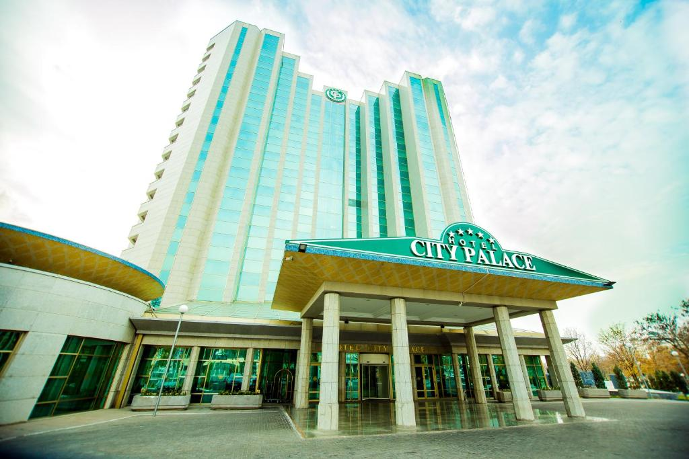
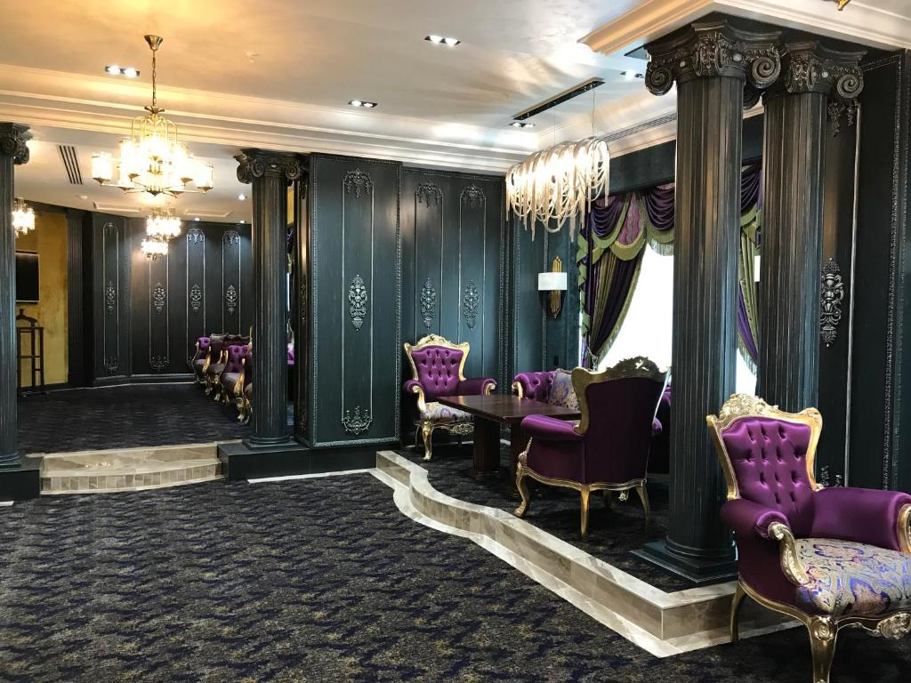
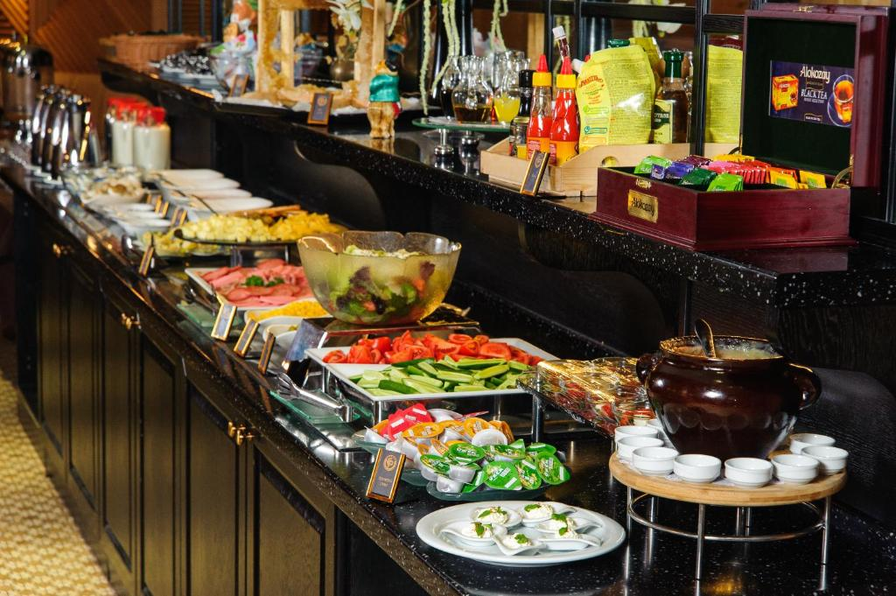
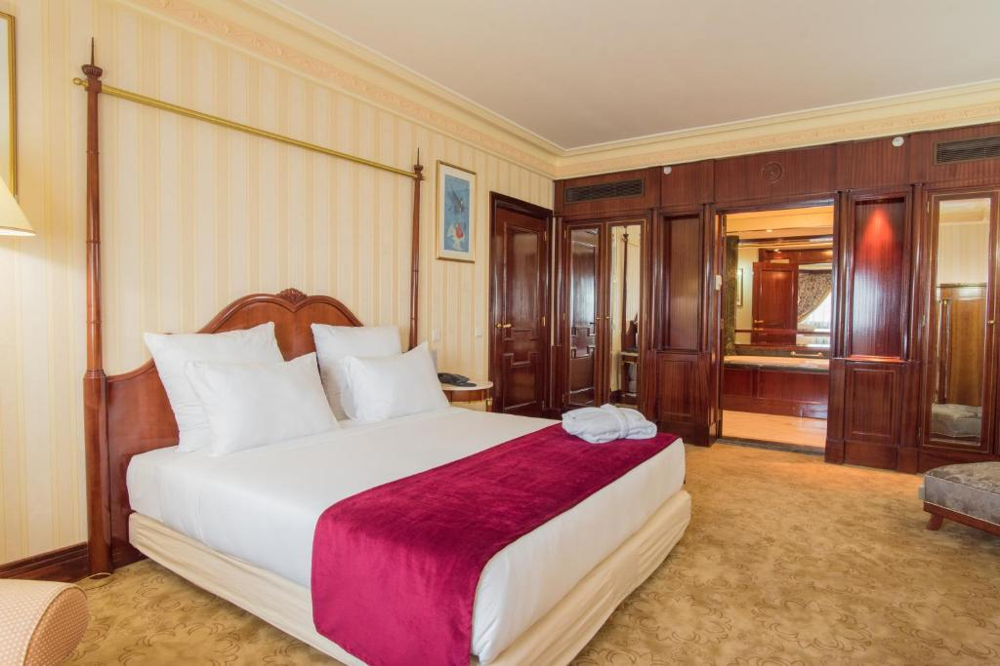
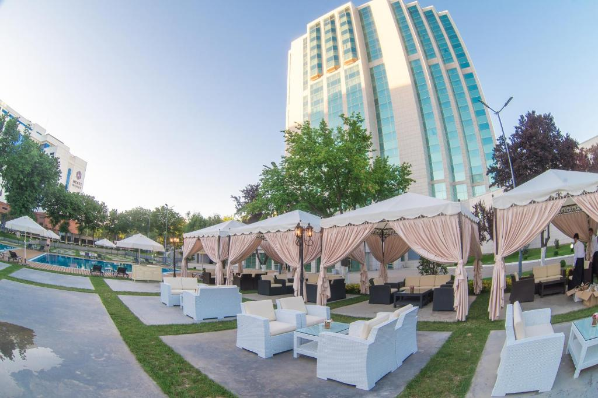
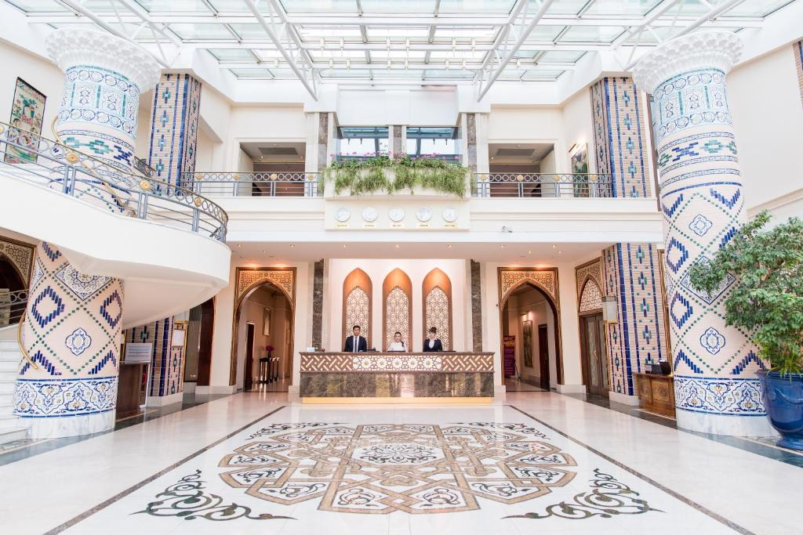
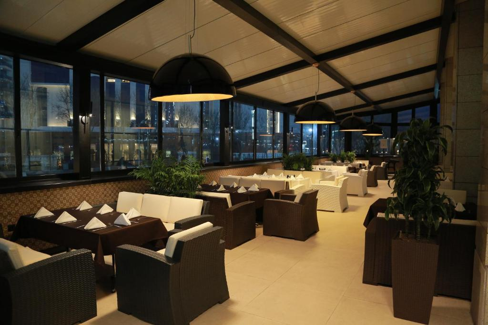
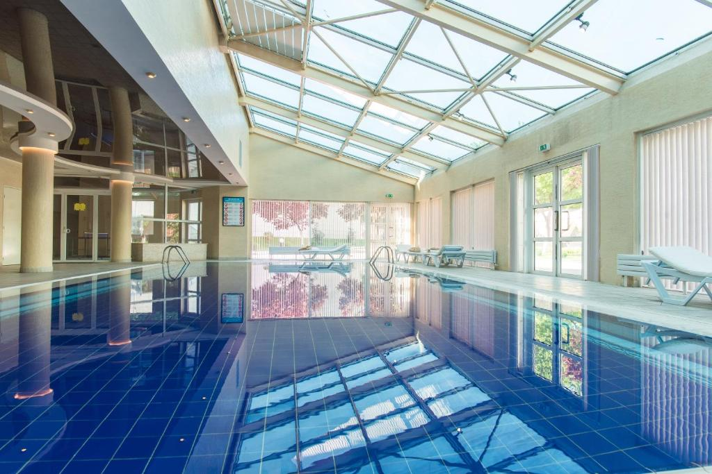
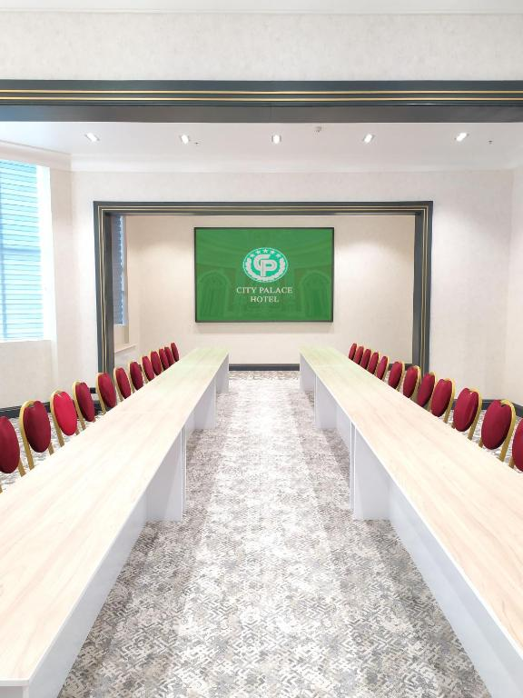
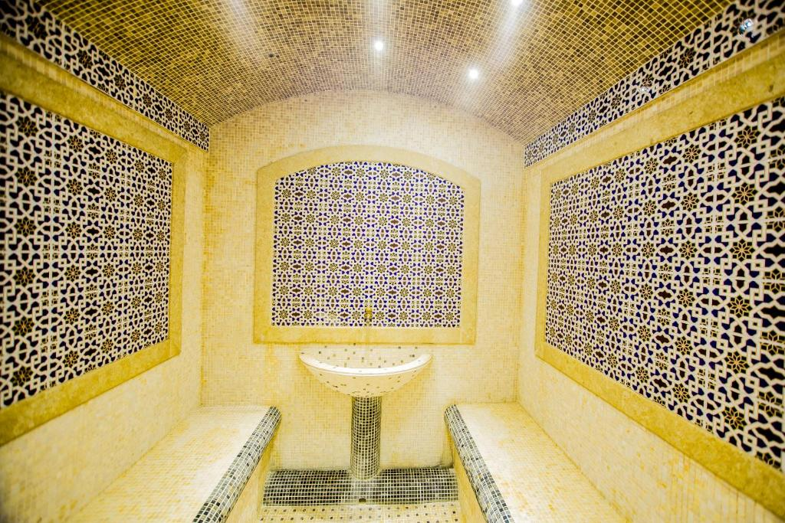

Advantages and Comforts of Hotel
City Palace Hotel in Tashkent
Modern hotel in heart of Tashkent city with many advantages and beautiful view. Already, have opened
doors for winter season and waiting for residents. Be one of the first clients and get amazing discount!


Main hole

Breakfast table

Bedroom inside rooms

Open garden and pool

Reception

Restaurant and bar

Swimming Pool

Meetings hole

Relaxing room
Additional Information About City Palace
City Palace Hotel Tashkent is 500 m from Emir Temur Square and Emir Timur Museum in the heart of Tashkent
city center. Features include an outdoor pool, indoor pool, and free WiFi.
A mini-bar, seating area, and refrigerator are provided in each room as well as a satellite TV. City Palace
Hotel Tashkent extras include an electric kettle, towels, and linen.
A restaurant is on site, and luggage storage is offered at reception for added convenience. Free parking is
provided.
Abdulla Kodiriy metro station is 350 m away. The hotel is also 2 mi from Pakhtakor Stadium, 6 minutes’ drive
from Tashkent Botanical Garden, and 4.3 mi from Tashkent International Airport.
Couples in particular like the location – they rated it 9.2 for a two-person trip.